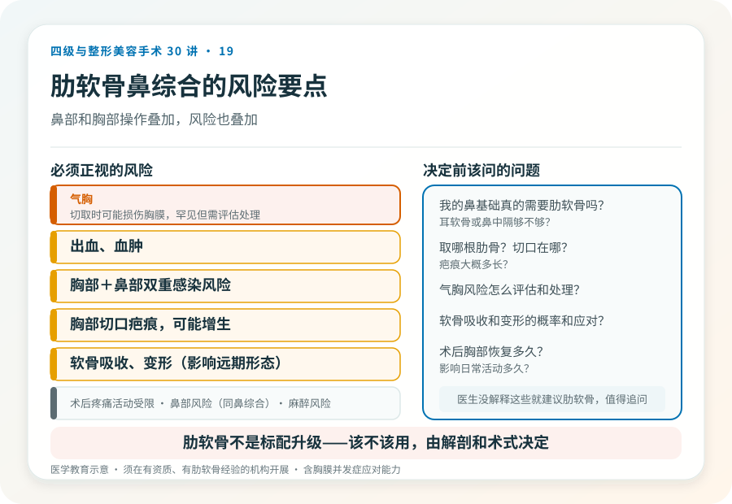

先说结论：肋软骨因支撑力强、可切取量大，常用于复杂鼻整形和鼻修复。但它意味着鼻部手术之外多一处胸部切口和取骨风险，且肋软骨可能吸收或变形，整体属于较高级别手术。把它理解成“高级版隆鼻”会低估它的代价，它不是为了“高级”，而是因为前次手术或复杂基础需要更多支撑材料。
什么情况下需要肋软骨
肋软骨通常用于：
- 鼻修复：前次手术失败、组织缺损、需要强力支撑重建。
- 鼻基础差：鼻中隔发育弱、鼻尖支撑不足，耳软骨和鼻中隔软骨量不够。
- 延长或大幅重塑鼻尖：需要大量支撑材料。
- 先天性或外伤后鼻畸形：复杂重建。
如果只是单纯垫高鼻梁、鼻尖基础尚可，通常不需要肋软骨，耳软骨或鼻中隔软骨即可。需要肋软骨，往往意味着鼻部条件复杂或前次有失败。
肋软骨的优缺点
优点：量充足、支撑力强、自体无排异、可雕刻成所需形态。
缺点：
- 额外切口和创伤：胸部切口（通常第六或第七肋），会留疤，术后胸部疼痛影响活动。
- 吸收：移植后部分吸收，可能影响远期形态，医生通常在雕刻时预留余量。
- 变形（弯曲）：肋软骨有内在应力，雕刻后可能弯曲变形，影响鼻形态，是肋软骨鼻整形的特有挑战。
- 切取并发症：气胸（罕见但严重，需胸膜评估）、胸膜损伤、出血、胸部瘢痕增生、慢性疼痛。
- 手术时间长、级别高：联合鼻部和胸部操作，复杂度上升。
几个必须正视的风险
- 气胸：切取肋软骨时可能损伤胸膜，罕见但需术中评估和必要时处理，是为什么需要正规麻醉和监护的原因之一。
- 出血、血肿。
- 感染：胸部切口和鼻部切口的双重感染风险。
- 胸部疤痕：会留下胸部切口疤痕，可能增生。
- 软骨吸收、变形：影响远期鼻形态，可能需要修整。
- 鼻部风险：与鼻综合相同（感染、不对称、皮肤血供等）。
- 术后疼痛和活动受限：胸部取骨后数天到数周活动受限。
- 麻醉相关风险：通常全身麻醉。
决定用肋软骨前该问的
- 我的鼻基础真的需要肋软骨吗？耳软骨或鼻中隔够不够？
- 取哪根肋骨？切口在哪？疤痕大概多长？
- 气胸风险怎么评估和处理？
- 软骨吸收和变形的概率和应对？
- 术后胸部恢复多久？影响日常活动多久？
如果医生没有解释这些就建议肋软骨，值得追问。肋软骨不是“标配升级”，而是有明确适应证的复杂术式。
一个常见误解
“肋软骨鼻综合比假体高级、效果更好。”这是一种消费化误解。肋软骨的选择是基于鼻基础和材料需求，不是因为“更高级”。简单鼻基础用肋软骨，是过度治疗；复杂基础不用肋软骨而硬塞假体，又可能增加风险。该不该用，由解剖和术式决定。
决策前的硬要求
面诊肋软骨鼻综合，至少做到：选择有资质、有肋软骨经验的机构和主刀；当面评估鼻基础和所需支撑；讨论取骨部位、切口、气胸风险评估；理解吸收、变形和修整可能；确认机构的麻醉和急救条件（含胸膜相关并发症的应对能力）。肋软骨鼻综合是较高级别手术，资质门槛和医生经验都更重要。
本文用于健康教育，不能替代面诊和个体化评估；肋软骨切取联合鼻综合/修复属较高级别手术，须在有相应资质的医疗机构由具备权限、有经验的医师开展。